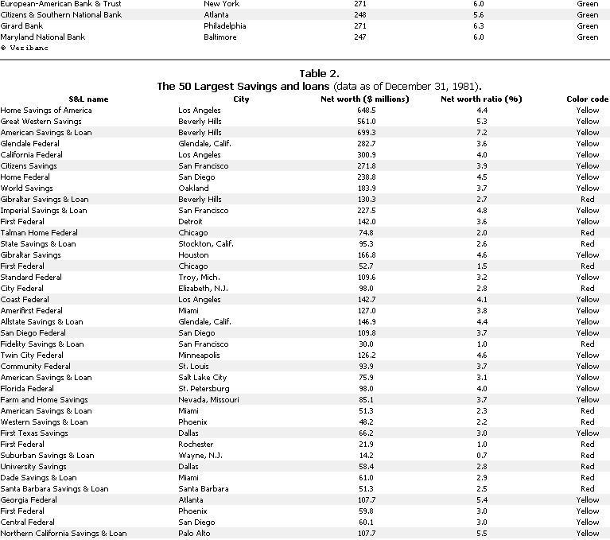

Economic Outlook
Economic outlook of major banking institutions, including two tables charting the stability of the top 50 largest commercial banks and savings and loans.
By the Mother Earth News editors
September/October 1982
IS YOUR BANK FAILING?
Although Washington continues to see economic recovery waiting for us at the end of each season, many of thereal indications of our nation's poor fiscal health are being ignored. Consider, if you will, the implications in the following material, adapted from the excellent newsletter, Personal Finance ....
More than a third of the nation's 50 largest savings and loan associations are "failing" by government standards, according to a computer-generated report commissioned by Personal Finance.
A companion survey of the top 50 commercial banks reveals that more than half do not meet the minimum equity capital requirements set by the federal banking agencies. Normally, a bank's reserves of equity capital provide a "safety cushion" for depositors in case the bank suffers unforeseen losses.
These findings are based on the latest financial statements (December 31, 1981) submitted to the federal banking agencies by more than 18,000 banks and S&Ls nationwide. Large commercial banks report quarterly to the Federal Reserve; S&Ls, semiannually to the Federal Home Loan Bank Board.
The government agencies that regulate the banking industry compile lists of "problem" banks and S&Ls, but the names of the institutions are kept secret. PF believes that the American public has a right to know how banks and thrift institutions are faring in these days of high interest rates, depressed real estate markets, widespread bankruptcies and international financial turmoil.
An enterprising Massachusetts-based team of computer software analysts, called Veribanc, has discovered a way to pinpoint troubled banks and S&Ls.
Periodically, the federal banking authorities issue a series of little-known computer tapes. These tapes contain detailed financial statements submitted by every federally supervised bank and S&L in the nation.
The banking regulators have stated publicly that they expect banks and S&Ls to maintain certain minimum financial ratios. By analyzing the raw data on the tapes, Veribanc states that it can determine whether an institution is meeting the government standards.
PF asked Veribanc to prepare a report on the nation's 50 largest commercial banks and S&Ls, which account for close to half of all U.S. bank deposits. We have condensed the Veribanc study into the accompanying tables.
THREE CATEGORIES
Under the Veribanc system, each bank or S&L falls into one of three categories: green, yellow or red.
To qualify for a "green" rating, a bank's equity or an S&L's net worth must equal at least 5% of the institution's total assets. The Federal Reserve, the FDIC and the Comptroller of the Currency have established this standard for commercial banks. The FDIC will require a specific plan to remedy the capital deficiency promptly for any supervised bank which falls below this 5% "minimum acceptable level."
The FDIC list of "problem banks" contains 245 banks, as of April 30, 1982.
A commercial bank with less than 5% equity is graded "yellow." In addition, a commercial bank that is losing money gets a yellow tag. (None of the top 50 had an operating loss during the reporting period covered by the Veribanc study.) Veribanc has also devised a set of criteria for putting commercial banks into the "red" category, but none of the top 50 is currently affected.
The Federal Home Loan Bank Board applies a similar test to S&Ls. The Board defines an S&L as "failing" if its net-worth-to-assets ratio falls below 3% or if, at its present rate of operating loss, the institution would reach zero net worth within a year. Veribanc awards a "red" in either case.
Before November 1980, the FHLBB used a 5% standard to identify "failing" S&Ls. Then the board changed its rule to 4%, and in January 1982 reduced it again to 3% - the minimum allowed by statute.
Veribanc classifies as "yellow" any S&L with a net-worth ratio of more than 3% but less than 5%. Also, if an S&L is running a loss (regardless of its net worth), Veribanc assigns a "yellow."
YELLOWS AND REDS
All 50 savings and loans rated either yellow or red, with 18 receiving the red (failing) designation. While none of the largest commercial banks was tagged red, 31 earned a yellow caution flag.
Forty-six of the 50 biggest S&Ls operated at a loss during the latest reporting period, which ended December 31, 1981. For each money-losing institution, Veribanc calculates how many months the S&L has before it exhausts its net worth (assuming the present loss rate continues).
An S&L with zero net worth is technically insolvent - broke. If they continue to lose money at the present rate, 13 of the top 50 (with assets of $37 billion) will reach insolvency within two years from now.
Several of Veribanc's "red" S&Ls have already begun merger proceedings, and one, Fidelity Savings and Loan, has been taken over by the Federal Savings and Loan Insurance Corp. It's reasonable to expect that federal regulators will force other "red" S&Ls into shotgun marriages over the coming year.
If your bank or S&L doesn't appear on the accompanying tables, you can order a similar report on any federally supervised institution by sending $20 to Veribanc (Dept. TMEN, P.O. Box 2963, Woburn, Massachusetts 01888). Furnish the full name and address of the institution, and enclose a stamped, self-addressed envelope.
 |
 |
 |